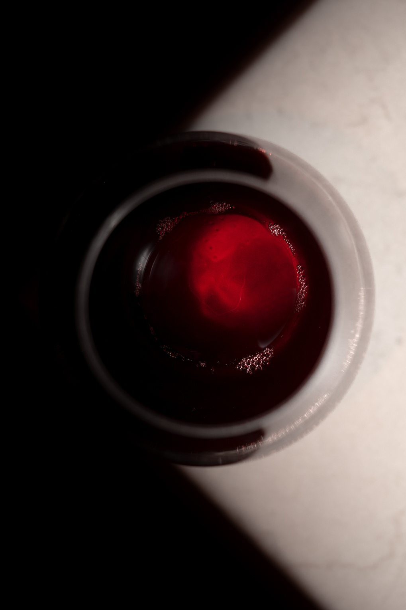
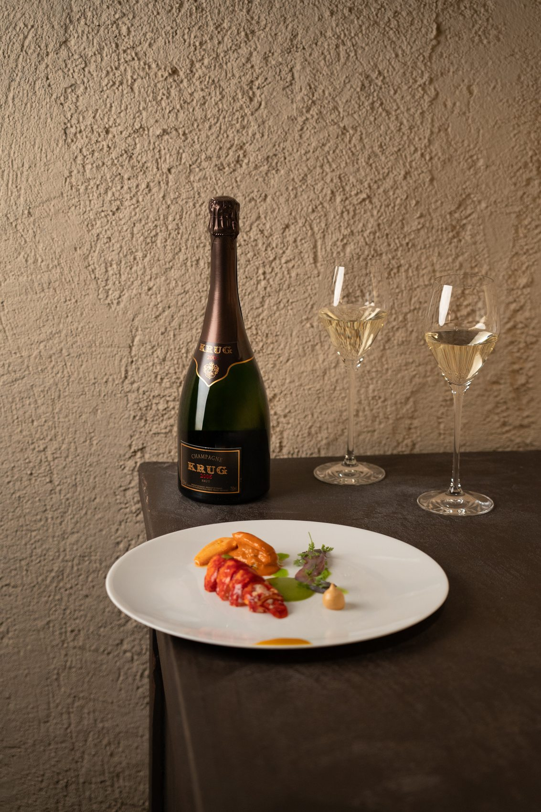

Geranium Copenhagen · 3 Michelin stars
Signature juice photography and contemporary chiaroscuro work.
Cinematic photography for fine dining, cocktail bars and luxury hospitality. Every image is built around the identity of the place.
In Barcelona · 12–18 January 2027. A few days available for shoots.
EnquireControlled light, chiaroscuro and cinematic mood. Every shadow is a choice.
Copenhagen · 3 Michelin stars. Fine-dining beverage photography inside Geranium's environment: signature juices and contemporary chiaroscuro. Concept and juices by Giulia Caffiero.


Sardinia · 1 Michelin star. Editorial photography for Krug, created at Fuoco Sacro. Photography also featured in the official Fuoco Sacro book, Enrico Bartolini Collection.


Copenhagen. Food photography for Nordic casual fine dining, from the noodle machine to the bowl.

Same eye. Different atmosphere.
Daylit tables, open kitchens, raw textures. The story is already there.
Michelin kitchens, champagne houses, luxury hotels and the bars that shape a city's night.
Signature juice photography and contemporary chiaroscuro work.
Editorial photography for Krug, also featured in the official Fuoco Sacro book.

Luxury hospitality: rooms, restaurants and bars, shot quietly around the service.

Before becoming a full-time photographer, I spent years working inside restaurants, bars and hotels. I understand the rhythm of a kitchen, the discipline behind every dish and the silence before service, so I work quickly and quietly around your team.
My style blends natural and artificial light, raw elegance and a strong sense of place. From Michelin-level kitchens to creative street food concepts, I build visual identities that connect venues and brands to their audience. I'm based in Sardinia and I travel for commissions across Europe and worldwide.
If you're looking for a visual identity that elevates your brand through atmosphere, storytelling and refined food imagery, I'd be happy to collaborate.